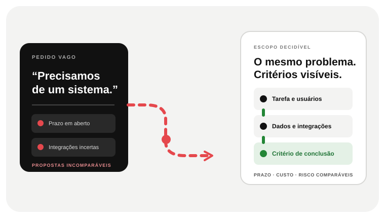

01 · O PROBLEMA
Qual tarefa precisa parar de se repetir?
Descreva um caso recente com entrada, participantes, decisões e resultado esperado.


 SITES · SOFTWARE · SISTEMASDescrever um projeto
SITES · SOFTWARE · SISTEMASDescrever um projetoANTES DE COMPARAR PREÇO, DEFINA O QUE PRECISA MUDAR
Antes de comparar orçamento, defina qual tarefa precisa mudar, quais ferramentas e dados entram no processo e como reconhecer uma entrega útil. Assim, cada proposta responde ao mesmo problema — e não apenas a uma lista de telas.

UMA BOA DECISÃO COMEÇA PELO TRABALHO
Compare propostas pelo problema e pela entrega esperada.
ANTES DE COMPARAR PREÇOS, DEFINA O TRABALHO
Um caso real dá base para comparar soluções, propostas e custos.
Descreva um caso recente com entrada, participantes, decisões e resultado esperado.
Compare o custo de configuração e contorno com o trabalho necessário para uma solução própria.
Usuários, exceções, dados e integrações explicam por que duas estimativas diferem.
Hospedagem, suporte, manutenção, permissões e propriedade precisam fazer parte da decisão.
Defina critérios de aceite, premissas e dependências para comparar prazo, risco e custo com mais clareza.
GUIA DE DECISÃO DE SOFTWARE · O PROBLEMA VISÍVEL
Dois orçamentos podem parecer diferentes porque cada fornecedor imagina usuários, exceções, dados e manutenção de um jeito. Compare o mesmo cenário, não só o número final.
“Painel”, “login” e “integração” não descrevem quais pessoas fazem o quê, com quais dados e sob quais regras.
Migração, fornecedores externos, aprovações e critérios de segurança podem alterar o trabalho e a ordem das etapas.
Hospedagem, backups, permissões, atualizações, suporte e propriedade do código precisam ser entendidos antes da assinatura.
O TRABALHO QUE PRECISA SER FEITO
O orçamento fica mais comparável quando parte de um caso real e enumera as variáveis que fazem o esforço mudar.
Quantas etapas existem, quantos perfis participam, quais regras decidem o caminho e o que acontece fora do padrão.
Onde estão os dados hoje, o que precisa migrar e quais ferramentas permitem integração, com acesso autorizado.
Nível de autenticação, privacidade, disponibilidade, suporte, manutenção e ambientes exigidos após o lançamento.
DECIDIR SEM APEGO À TECNOLOGIA
Não transforme desenvolvimento próprio em resposta automática. O melhor caminho depende do quanto o fluxo é padrão e do custo de manter seus contornos.
DO PROBLEMA A UM ESCOPO DECIDÍVEL
Escolha um caso real, liste usuários, regras, dados, integrações e critério de conclusão; então peça que cada proposta responda à mesma necessidade.
Descreva uma solicitação recente: entrada, pessoas, decisões, exceções e conclusão.
Separe o mínimo que comprova valor das melhorias posteriores; registre dependências e fora de escopo.
Peça entregáveis, premissas, acesso a dados e código, critérios de aceite, suporte e operação.
PERGUNTAS DE QUEM ESTÁ AVALIANDO
Não existe faixa universal útil sem saber o problema. Um fluxo simples sem integração é diferente de várias funções, migração, permissões e operação crítica. O próximo passo é fechar um caso e suas variáveis.
Compare com o mesmo escopo: jornadas, integrações, entrega, propriedade, suporte, segurança, premissas e o que ficou de fora. Preço por hora ou número de telas sozinho não mede risco.
Um exemplo recente do trabalho, quem participa, onde atrasa ou volta, ferramentas atuais e o que mudaria se a solução funcionasse. Não precisa chegar com a tecnologia escolhida.
UMA CONVERSA COMEÇA COM UM CASO REAL